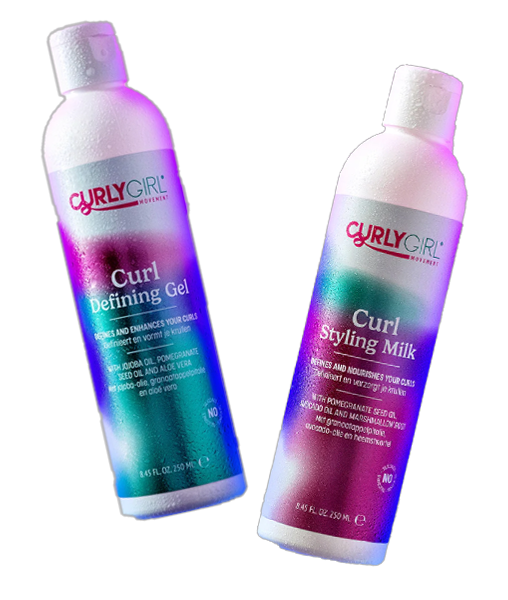

Opgelet curlykings & curlyqueens!
Hier zijn wat onmisbare tips om je krullen te laten stralen:
1. Hydratatie:
Krullen hebben dorst, dus zorg ervoor dat je ze goed hydrateert! Ga voor hydraterende shampoos en conditioners, en probeer eens per week een diepe conditioning treatment. Net als een spa-dag, maar dan voor je krullen. Zorg ervoor dat je eens per week je haar wast, je hoeft niet altijd te wassen met shampoo en conditioner. Alleen nat maken met wat water als je krullen dat nodig hebben. 🚿💆♀️
2. Love The Curly Creams:
Investeer in een goede curl cream. Dit is een topmiddel voor je krullen! Het definieert en hydrateert je haar, waardoor je krullen de show stelen. 💪
3. Vind Jouw Curly Secret:
Krullen verschillen, dus het vinden van jouw perfecte product is kost tijd. Probeer verschillende merken en producten uit, en let op welke producten je krullen het beste laten werken. 🕵️♀️🧴
4. Oil Love:
Verschillende olies zijn als BFF's voor je haar. Olies als castorolie, rozemarijn olie of argan olie zorgen voor gezonde haargroei. Het voedt, verzacht, en geeft je krullen een natuurlijke glans. ✨
5. Gezonde Krullen:
Gezond eten is niet alleen goed voor je lichaam, maar ook ook voor je krullen! Vitamines en mineralen zijn als superfoods voor je haar. Denk aan groenten, fruit, en gezonde vetten om je krullen van binnenuit te voeden. 🍏
Keep in mind:
Niet alles wat andere gebruiken werkt voor jou type haar. Ga dus zelf op zoek naar jouw producten. Krullen hebben liefde en zorg nodig. Dus laat die krullen maar stralen en geef ze de aandacht die het verdient!
#CurlTips
Dit zijn mijn favoriete haarproducten:
De Styling Milk en Defining Gel van Curly Girl Movement.
